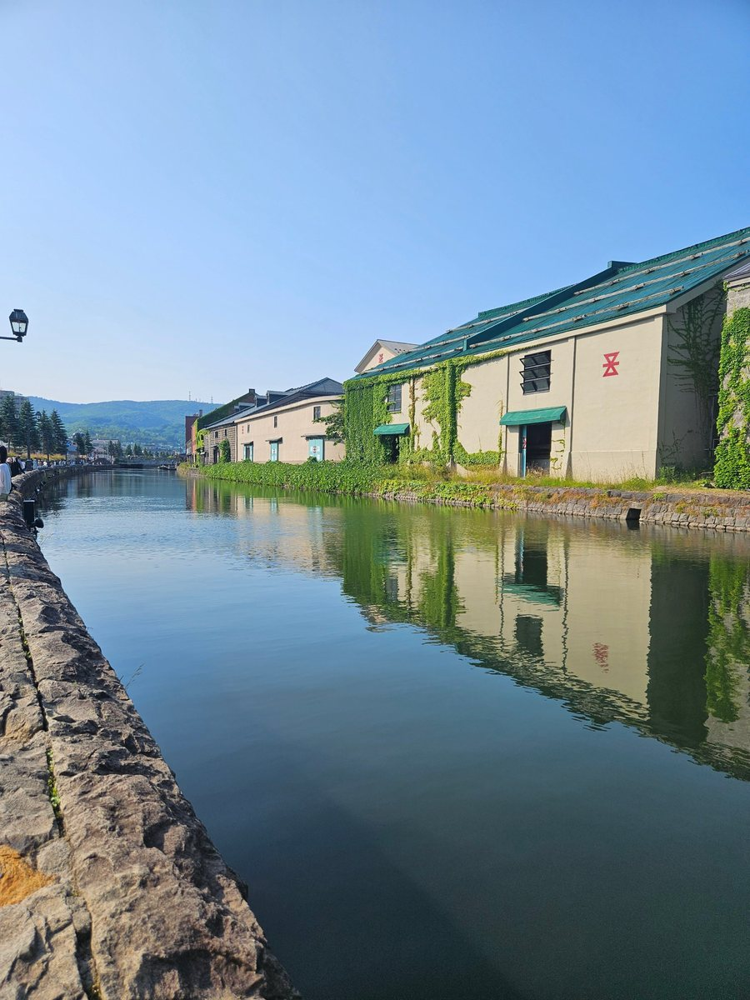
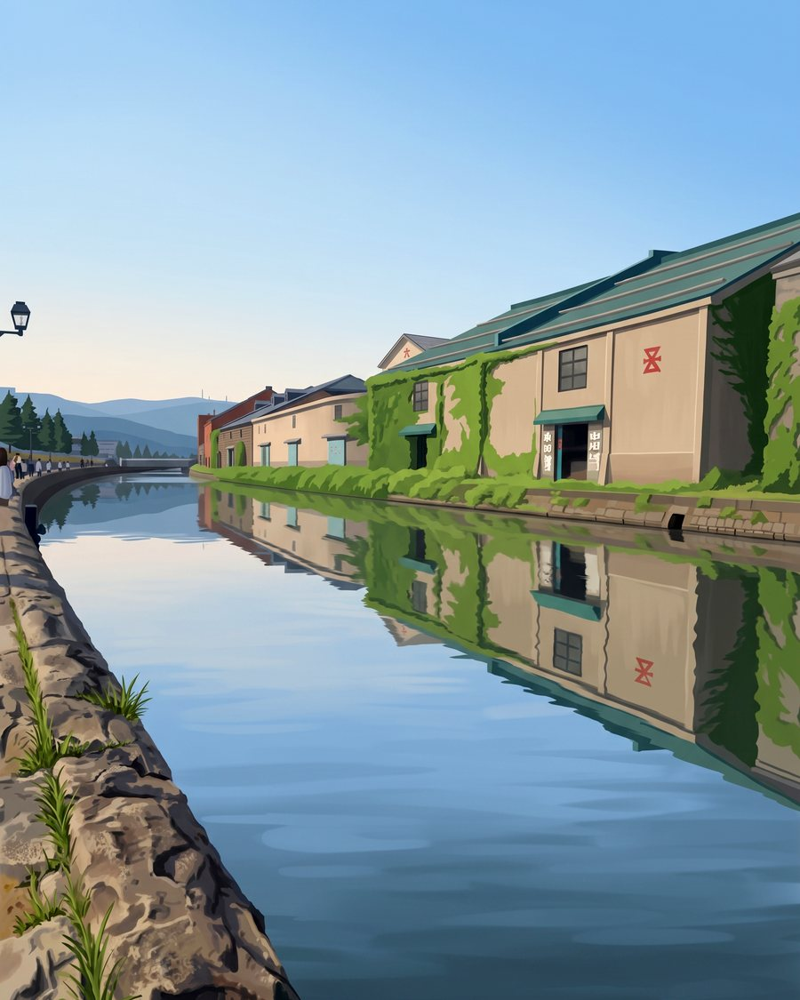
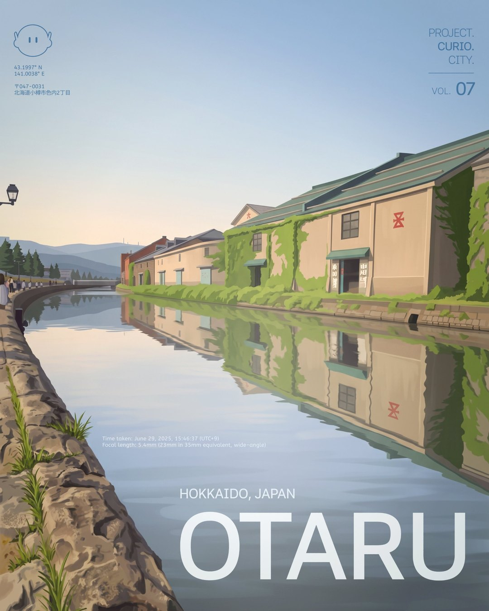
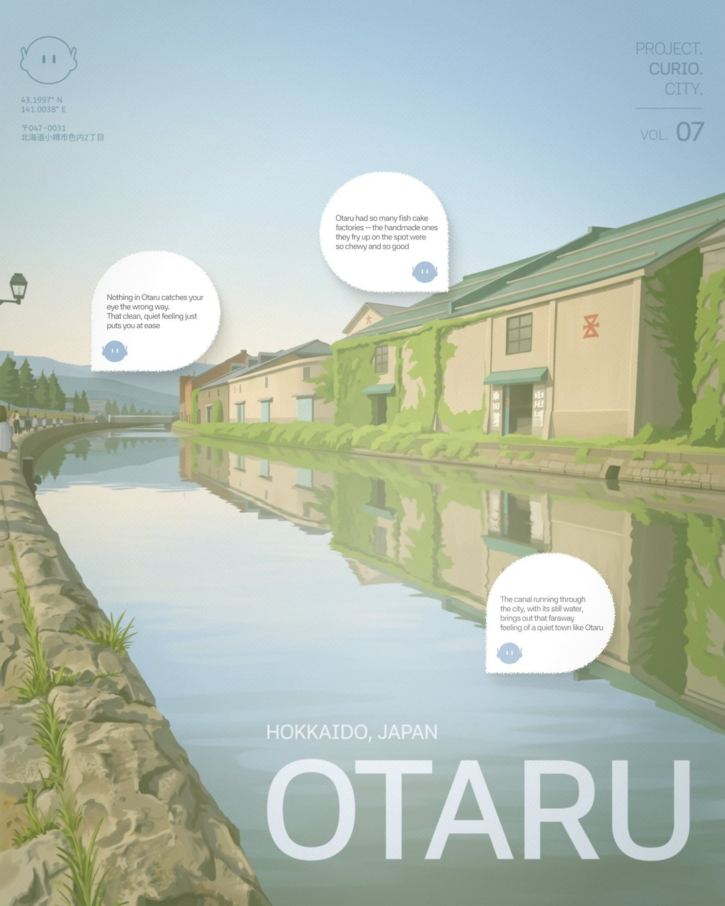

PREPARING TO DEPART
37.2636 N127.0286 E
37.2636 N127.0286 E
Curio is a small explorer robot that collects cities.
For every place it stops, it leaves one photo, a few quiet lines,
and a stamp in its passport. PROJECT. CURIO. CITY.
is the travel log of those stops, one volume per place.

IN GAME VER.Low-res pixel CURIO for the pixel game
IN BRAND VER.A vector symbol, clear at a glance on SNS
A photo taken on site is re-rendered in an illustrated tone with Nano Banana,
then finished as a cover and a review cut with the place name, observation log and symbol.

01 · SHOT ON SITEI photograph the place myself and log the time, focal length and coordinates as Curio's observation data.

02 · MOOD SHIFT WITH AIKeeping the original composition and buildings, the photo is re-rendered as an illustration with a photographic texture.


03 · POSTER & REVIEWPlace-name type, the observation log and the symbol make the cover; in the review cut, Curio's speech bubbles record the moment.
MADE BY KIM MINSEOK PORTFOLIO →
PROJECT. CURIO. CITY.© 2026 Kim Minseok